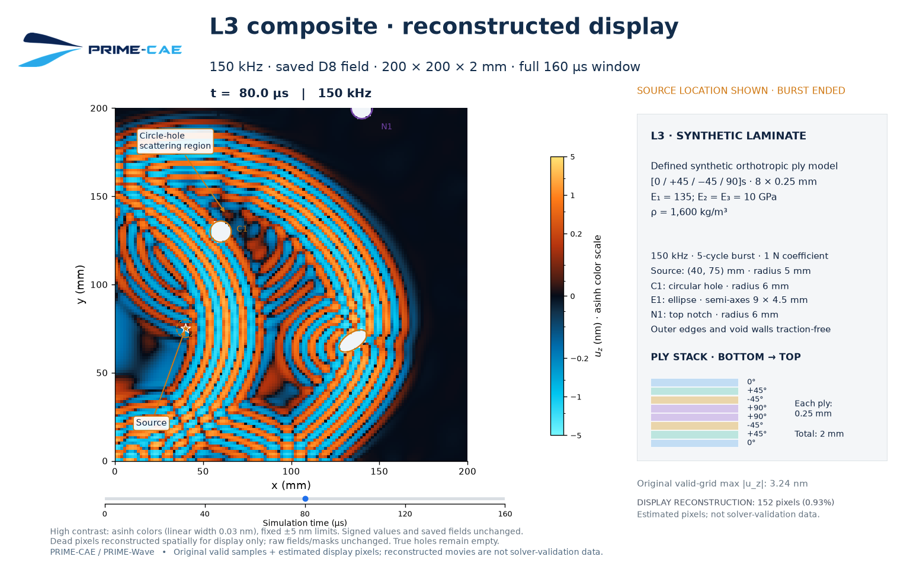

Spectral element Method for wave propagation in isotropic and composite materials
Watch guided-wave demonstrations in an isotropic aluminium plate and a composite laminate.
PRIME-CAE
Public engineering knowledge, platform developments and company announcements from PRIME-CAE.
Inspect stress concentration around the hole as the cube is pulled from its sides. The video presents the model’s stress field.
Cube with a hole under side tension · PRIME-CAE demonstration.
A 150 kHz guided-wave demonstration in an isotropic aluminium plate. Watch scattering around openings and reflections from the plate boundaries.
Isotropic aluminium plate · 150 kHz. Guided-wave propagation, scattering and reflections. These videos use reconstructed display pixels, as annotated in the original media.
A 150 kHz guided-wave demonstration in the synthetic L3 composite laminate, showing propagation, scattering and reflections.
L3 composite laminate · 150 kHz. Guided-wave propagation, scattering and reflections. These videos use reconstructed display pixels, as annotated in the original media.
3 publications

Watch guided-wave demonstrations in an isotropic aluminium plate and a composite laminate.
An introduction to the shared platform and PRIME-DESIGN, PRIME-JOINT, PRIME-LIFE and PRIME-COPILOT.

Swept-wing refinement and a two-body fluid-domain mesh, illustrated with figures from the PRIME-CAE demonstrations.
Follow this page for company direction, funding and contract announcements as they are published.